MD安德森 王凌华老师高分文章汇总2023-2026
原文：https://mp.weixin.qq.com/s?__biz=MzAwMzIzOTk5OQ==&mid=2247537573&idx=1&sn=91184bf16990ba4fb3c6ff965f64ca6f&chksm=9b3c2af5ac4ba3e3306b094d829b819dabd8c0ad7725445b9c425cf10bb1609fedef3250617c#rd 合集：文献速递
一、写在前面
今天整理的学术前沿主人公是：MD安德森癌症中心基因组医学系终身制副教授、计算生物学实验室负责人——王凌华。她在计算生物学、癌症基因组学与免疫信息学领域深耕多年，致力于利用前沿的单细胞及空间多组学技术，结合自主研发的生物信息学工具，系统解析肿瘤生态系统的细胞与分子机制。她的研究贯穿肿瘤发生、进展、转移、治疗响应与耐药全过程，聚焦癌细胞与微环境的动态互作，是肿瘤单细胞与空间组学领域的国际领军人物之一。她不仅构建了覆盖多种癌症类型的单细胞及空间转录组图谱，近年来更是带领团队在泛癌T细胞应激状态与免疫治疗耐药、肺腺癌上皮细胞可塑性与早期发生机制、跨癌种保守的CAF空间亚型等前沿方向取得了一系列突破性成果。
本期我们特意为大家梳理了王凌华老师团队近期的高分研究成果。当然，这位科学家的重磅成果远不止篇幅所限的这几篇，欢迎大家在评论区留言交流你关注的相关研究文章。
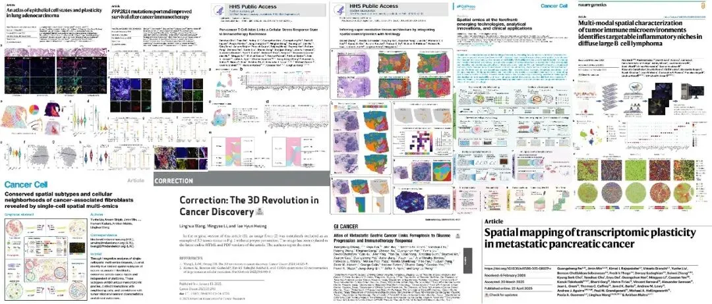
专家介绍：王凌华担任MD安德森癌症中心基因组医学系的终身制副教授，现任计算生物学实验室负责人。她在计算生物学、癌症基因组学和免疫信息学领域拥有深厚的专业造诣。她的研究团队致力于利用尖端的单细胞及空间多组学技术、细胞成像手段，结合自主研发的创新生物信息学工具与计算框架，对肿瘤生态系统进行深度剖析。研究重点涵盖肿瘤发生、进展、转移、治疗响应及耐药过程中的细胞与分子异质性、表型可塑性、动态变化，以及癌细胞与肿瘤微环境（TME）细胞间的复杂相互作用。
实验室聚焦于以下三大核心领域：
-
从癌前病变到浸润性癌的转化机制：全面刻画肿瘤发生发展的细胞与分子轨迹，旨在开发用于患者精准分层的分类器与风险预测模型，并识别潜在靶点以制定有效的癌症拦截策略。
-
从局部肿瘤到转移灶的演化过程：深入探索转移的细胞与分子基础，解析癌细胞与肿瘤微环境的协同进化机制，以及原发灶和转移灶中癌细胞与各类免疫及基质细胞间的适应性相互作用。
-
抗癌治疗的动态响应与耐药性形成：旨在 pinpoint 决定治疗响应的癌细胞内在因素及微环境外在因素，鉴定稳健的生物标志物并构建治疗前响应预测模型，从而发现新靶点以开发高效的联合疗法。
王凌华老师通过协作团队模式建立了极具影响力的研究组合，目前担任多项
（一）重要职务：
-
国家级资助项目负责人：
-
担任美国国立卫生研究院/国家癌症研究所（NIH/NCI）资助的R01项目首席研究员（PI）及U01项目多首席研究员（MPI）。
-
担任NIH/NCI U24资助项目的数据分析与可视化部门主管。
-
州级资助项目负责人：
-
担任德克萨斯州癌症预防与研究所（CPRIT）资助的两项独立研究者研究奖（IIRA）的PI/MPI。
-
大型合作计划领导：
-
“突破癌症”（Break Through Cancer, BTC）胰腺癌与卵巢癌项目数据科学现场负责人。
-
BTC数据科学TeamLab联合负责人。
-
MD安德森癌症中心“高危多发性骨髓瘤登月计划”联合负责人。
-
MD安德森胃肠道SPORE项目生物统计与生物信息学核心联合主任。
（二）学术成就与荣誉：
-
论文发表： 已发表学术论文120余篇。其中约40篇以第一作者/共同第一作者、资深作者或通讯作者身份发表于顶级期刊，包括《Nature》（2014, 2020, 2024）、《Nature Medicine》、《Cancer Cell》、《Cancer Discovery》、《Gastroenterology》、《Lancet Oncology》、《Cell Systems》等。
-
获奖情况：荣获Emil Frei, III转化研究卓越奖、David M. Livingston合作奖及Sabin研究员奖。
-
学术服务：
-
担任顶级期刊《Cancer Discovery》科学编辑。
-
多次受邀担任NIH/NCI资助评审小组成员。
-
担任AACR年会、SITC年会及ENAR春季会议等重要学术会议的主席或联合主席。
更多单细胞/空转相关内容分享可见：Python scRNA-seq分析全流程R语言scRNA-seq分析系列专题Python 空间转录组分析教程
二、主要内容
一、题目：Pan-cancer T cell atlas links a cellular stress response state to immunotherapy resistance
IF：50
期刊：Nature Medicine
发表日期：2023.06
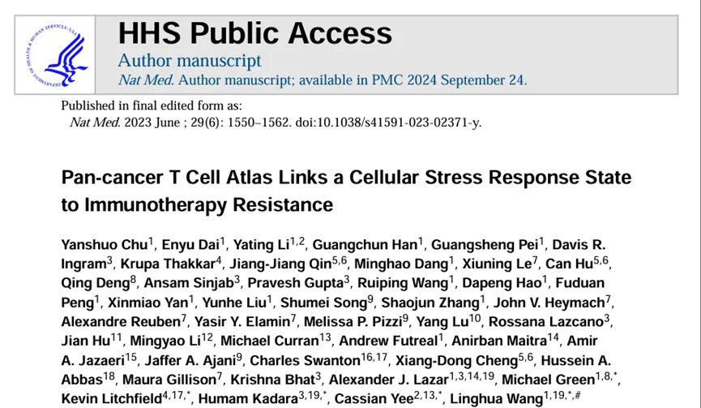
肿瘤浸润T细胞为癌症治疗提供了有前景的途径，但其状态仍有待全面解析。本研究通过分析16 种癌症类型的308,048 个单细胞转录组，构建了T细胞图谱，发现了以往未描述的 T细胞状态以及滤泡辅助性、调节性和增殖性 T细胞的异质亚群。作者鉴定出一种独特的应激反应状态——TSTR细胞 ，其特征是热休克基因的表达 。TSTR细胞可在多种癌症类型的肿瘤微环境中被原位检测到，主要位于肿瘤内部或边缘的淋巴细胞聚集区或潜在的三级淋巴结构 中。通过对来自 23个队列的375例患者（包括171 例接受免疫检查点阻断治疗的患者）的分析，作者发现T细胞状态/组成与基因组、病理学和临床特征 相关。研究还发现，在免疫检查点阻断治疗后，尤其是无应答肿瘤 中，瘤内CD4/CD8+ 细胞的热休克基因表达显著上调，这提示TSTR 细胞可能在免疫治疗耐药中发挥作用。
二、题目：An atlas of epithelial cell states and plasticity in lung adenocarcinoma
IF ：48.5
期刊：Nature
发表日期：2024.02
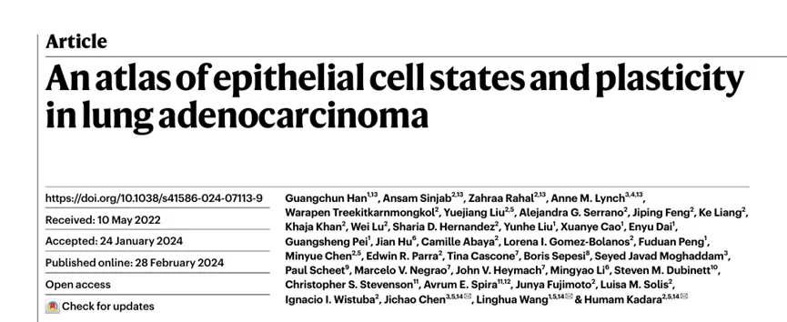
在这项研究中，研究者收集了来自16例肺腺癌患者的共63个组织样本，包括16个肺腺癌样本和47个非肿瘤样本（在距离肿瘤三个不同的空间位置梯度取样）。研究组对全部样本进行了单细胞RNA测序，并对16个腺癌样本进行了全外显子组测序， 并获取了229,038 个高质量的正常上皮单细胞的转录组数据以及17,064个肿瘤细胞的转录组数据。这项研究工作是迄今为止关于早期未经治疗干预的肺腺癌在上皮细胞规模和整合数据类型上最大和最全面的单细胞研究。 研究者首先构建了正常上皮的单细胞图谱，然后对鉴定出的癌细胞进行了系统的生物信息学数据分析。分析不仅揭示了早期肺腺癌中肿瘤细胞的显著异质性。更重要地是，研究者发现 KRAS 突变的早期肺腺癌肿瘤细胞在转录组上表现出独特的转录特征，与来自不含 KRAS 突变病人的肿瘤细胞有显著区别。
这项大规模的多组学整合研究发现了KACs细胞在早期 KRAS 突变的肺腺癌中的重要作用，并使用转基因工程小鼠模型系统性地验证了KACs为来源于2型肺泡细胞的中间状态细胞，在2型肺泡细胞参与肺损伤修复，补充1型功能性肺泡细胞的生物学过程中，参与了 Kras 突变型的肺腺癌细胞的产生过程。这项研究揭示了肺腺癌发生过程和上皮细胞可塑性的重要联系，为肺腺癌的预防和早期干预提供了潜在的研究靶点。
三、题目：Conserved spatial subtypes and cellular neighborhoods of cancer-associated fibroblasts revealed by single-cell spatial multi-omics
IF ：44.5
期刊：Cancer cell
发表日期：2025.05
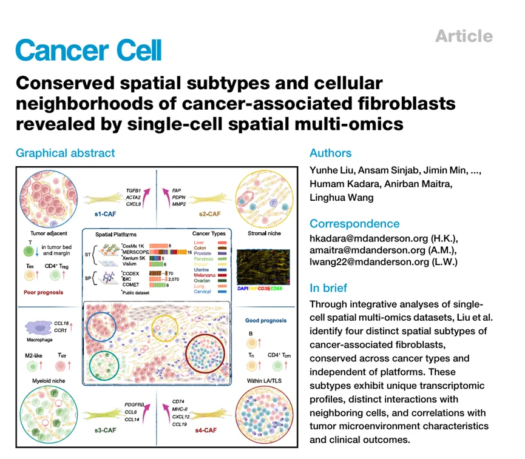
该研究通过创新性地整合跨平台单细胞空间多组学技术和先进生物信息学分析方法，系统解析了10种癌症类型中超过1400万个细胞的空间转录组特征，首次鉴定出四种具有跨癌种保守性的CAF空间亚型，这一重要发现突破了传统认为CAF亚型具有显著癌种特异性的认知框架。该研究作为迄今规模最大、覆盖最全面，且分辨率最高的泛癌CAF空间分型研究，其成果被同行专家评价为“空间多组学技术应用于肿瘤微环境研究的典范之作”，不仅深化了对肿瘤微环境异质性的理解，更为开发基于空间组学特征的创新性精准靶向治疗与免疫联合治疗策略奠定了重要的理论基础。
最后，作者利用两组基于空间单细胞蛋白组学数据（包括IMC平台的1,070例非小细胞肺癌的样本和CODEX平台的35例结直肠癌样本），分析了不同肿瘤类型及病理分期中CAF空间亚型的组成和比例差异，并发现其与患者预后显著相关。该发现进一步强调了深入理解CAF空间异质性的驱动机制及其在癌症进展和免疫调控中多样化功能性的重要意义。
四、题目：Spatial omics at the forefront: emerging technologies, analytical innovations, and clinical applications
IF ：44.5
期刊：Cancer cell
发表日期：2026.01
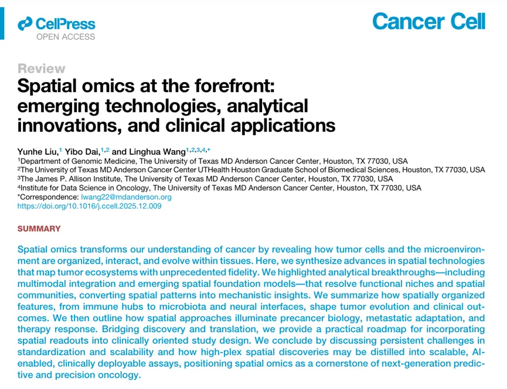
这篇综述指出，空间组学技术已突破传统单细胞测序丢失位置信息的局限，通过基于成像（如MERFISH、CosMx）和基于测序（如Visium、Stereo-seq）的两大主流平台，实现了在保留组织原位背景的前提下，对肿瘤微环境进行高分辨率、多维度的分子图谱绘制。文章强调，结合人工智能与深度学习等前沿分析工具，研究者现在能够精准识别功能性组织结构域、重构细胞间通讯网络，并解析癌细胞与免疫及基质细胞在空间上的复杂互作机制，从而真正“看懂”肿瘤生态系统的运行原理。
在临床转化方面，该综述展示了空间组学在发现新型生物标志物、预测免疫治疗响应及揭示耐药机制中的关键作用，特别是通过量化三级淋巴结构（TLS）和免疫排斥模式等空间特征，为癌症患者分层提供了超越传统指标的新维度。尽管面临成本高昂和数据标准化等挑战，文章展望该技术未来将整合多组学数据并常规化应用于病理诊断，成为推动精准肿瘤学发展、指导联合疗法设计及实现“空间精准医疗”的核心驱动力。
五、题目：Multi-modal spatial characterization of tumor immune microenvironments identifies targetable inflammatory niches in diffuse large B cell lymphoma
IF：29.0
期刊： Nature Genetics
发表日期： 2025.11
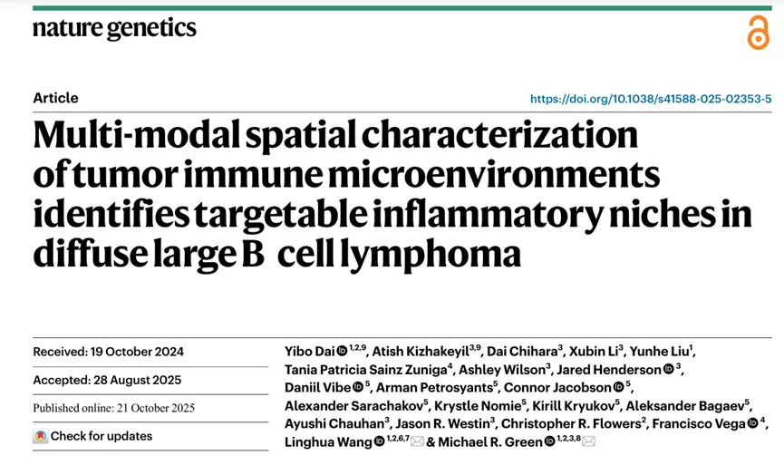
该研究基于对70余例B细胞淋巴瘤的基因组、转录组、空间单细胞转录组和空间单细胞蛋白组学分析，揭示了B细胞淋巴瘤中存在的七种不同微环境空间生态位，并系统描绘了微环境空间生态位与淋巴瘤关键临床特征之间的关联。该研究不仅揭示了弥漫性大B细胞淋巴瘤的空间组织结构、抗肿瘤免疫应答及免疫治疗反应的复杂性，还为理解其免疫微环境特征提供了理论基础。通过揭示不同微环境空间生态位的存在及其与临床特征的关联，该研究为设计个体化治疗方案和改善患者预后提供了新的思路。此外，该研究还为单细胞空间组学研究提供了新的分析框架，有助于推动相关领域的进一步发展。六、题目：The 3D Revolution in Cancer Discovery
IF：33.3
期刊：Cancer Discovery
发表日期：2024.04
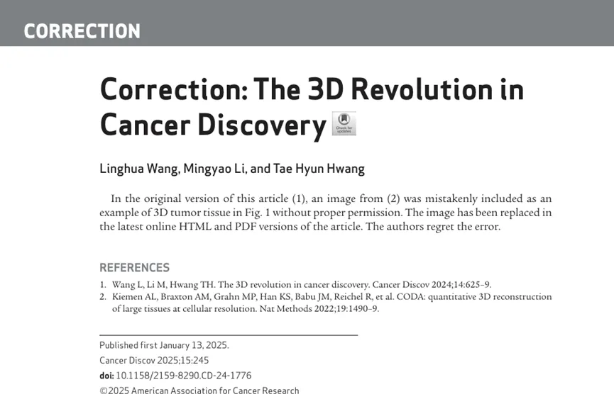
这篇文章旨在阐述癌症研究范式从传统的二维 （2D）向三维 （3D）的根本性转变。作者认为，只有重建肿瘤的三维结构（包括空间位置、组织架构和微环境互作），才能真正理解癌症的异质性、进化机制和治疗耐药性，从而开启癌症发现的新纪元。
通过3D技术，文章总结了以下领域的突破性认知：
1、肿瘤异质性的空间解码：揭示肿瘤内部不同区域（核心、边缘、侵袭前沿）的克隆演化差异，解释为何同一肿瘤内存在不同的治疗响应。
2、免疫微环境的动态互作：在3D空间中观察免疫细胞（如T细胞）如何穿透基质、识别癌细胞以及形成“免疫排斥”或“免疫沙漠”结构，特别是三级淋巴结构（TLS）的3D形态与预后的关系。
3、转移与耐药的机制：发现癌细胞在3D压力下（如缺氧、机械应力）激活的特殊生存通路，这些通路在2D培养中往往无法被检测到。
七、题目：Inferring super-resolution tissue architecture by integrating spatial transcriptomics with histology
IF：41.7
期刊：Nat Biotechnol
发表日期：2024.09
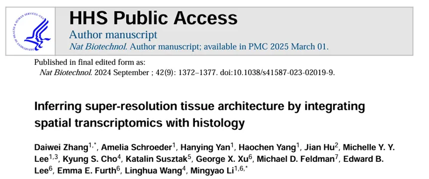
iStar是一种基于层次图像特征提取的方法，通过整合空间转录组学（ST）数据和高分辨率组织学图像，以超分辨率预测空间基因表达。研究使用了多种公开可用的ST数据集进行验证，涵盖了人类乳腺癌、小鼠脑、人类结直肠癌、人类前列腺癌、人类肾细胞癌等多种组织类型的数据，确保了研究结果的广泛适用性。iStar能够根据预测的基因表达信息对组织学图像进行分割，准确识别出不同的组织区域和细胞类型，同时在单细胞水平上也能提供较为准确的基因表达预测。
该方法突破了传统空间转录组学技术分辨率的限制，能够更精准地解析组织内细胞的分子特征和空间关系，为深入理解癌症的发生发展机制提供了重要支持。
八、题目：Atlas of Metastatic Gastric Cancer Links Ferroptosis to Disease Progression and Immunotherapy Response
IF：25.9
期刊：Gastroenterology
发表日期：2024.12
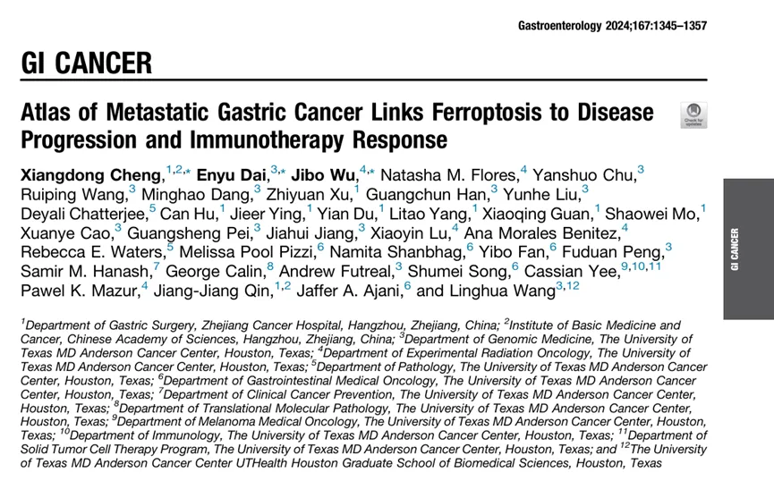
此研究首次将转移性胃癌图谱将铁凋亡与疾病进展和免疫治疗反应联系起来，胃腺癌（GAC）转移导致高发病率和死亡率。开发创新且有效的疗法需要全面了解先进 GAC 的肿瘤和免疫生物学。然而，从晚期、未接受过治疗的 GAC 患者中收集匹配的标本构成了重大挑战，限制了目前主要集中于局部肿瘤的研究范围。这一差距阻碍了对 GAC 转移动力学的更深入了解。作者对 68 个配对的、未经治疗的原发性转移肿瘤进行了深入的单细胞转录组和免疫分析，以描绘转移进展过程中癌细胞及其肿瘤微环境 (TME) 的变化。为了验证他们的观察结果，作者利用细胞系、多种 PDX 和新型 GAC 小鼠模型进行了体外和体内全面的功能研究。
九、题目：Spatial mapping of transcriptomic plasticity in metastatic pancreatic cancer****
IF ：48.5
期刊：Nature
发表日期：2025.04
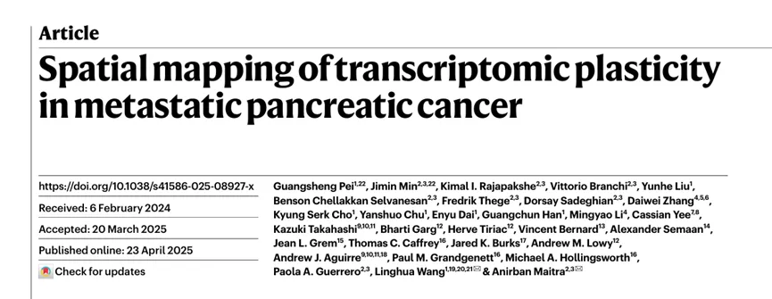
该研究利用空间转录组学技术 对13例胰腺导管腺癌（PDAC）患者快速尸检的55份原发灶和转移灶（肝、肺、腹膜）样本进行系统分析，首次构建了转移性胰腺癌的高分辨率空间转录组图谱。研究揭示了胰腺癌从原发灶向器官特异性转移灶演进过程中显著的转录组可塑性 、患者特异性的克隆演化异质性，同时阐明了癌细胞谱系状态与肿瘤微环境（TME）的紧密空间耦合关系。研究发现TGFB1阳性肌成纤维细胞样癌相关成纤维细胞（myCAFs）与侵袭性基底样癌细胞特异性共定位，并通过CXCR4-CXCL12 信号轴介导浆细胞从肿瘤微环境中排斥，最终形成免疫抑制表型。
** **
十、题目：PPP2R1A mutations portend improved survival after cancer immunotherapy****
IF ：48.5****
期刊： Nature
发表日期：2025.08
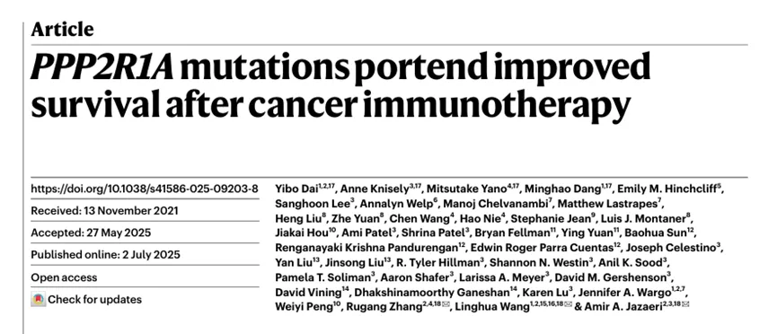
该研究基于两项临床试验中对患者反应性和生存情况的观察发现：携带PPP2R1A基因突变（该基因编码PP2A复合体的骨架结构之一）的铂耐药卵巢透明细胞癌患者，在接受抗PD-1/L1与抗CTLA4联合免疫治疗后，其生存期显著优于PPP2R1A野生型患者。随后，研究团队利用转录组和单细胞蛋白组技术对研究纳入患者的临床样本进行免疫微环境特征的深入解析，并通过多种临床前模型（包括体外及体内实验）验证了PPP2R1A突变可提高肿瘤对于免疫杀伤的敏感性。最后，研究者进一步分析了多个接受免疫治疗的肿瘤临床队列，发现PPP2R1A突变与肿瘤免疫治疗获益之间的关联不局限于卵巢透明细胞癌，而可能在多种类型的肿瘤中普遍存在。这一研究表明PPP2R1A突变可作为卵巢免疫治疗反应性的重要预测标志物，并提示对于PPP2R1A野生型者，靶向抑制PP2A可能有望增强免疫治疗效果，为卵巢癌的精准免疫治疗提供了重要的新思路。
三、随便聊聊
站在巨人的肩膀上，方能看得更远。追随前辈学者的脚步，是我们深耕科研的重要路径。此前，我们已推出多期科学家系列专题，诚邀各位同道交流探讨，共促学术精进。同时我们也发布许多单细胞分析复写，如果对文献复现感兴趣的朋友欢迎联系客服[Biomamba_zhushou]进群，大家一起交流和学习~汤神近5年学术成果集锦张泽民院士近年高分文章集锦（2020-2025）樊嘉院士近年高分文章集锦（2022-2026）84岁高龄依旧在做高质量科研，陈润生院士近年文章集锦（2021-2026）谭蔚泓院士高分文章汇总(2025-2026)哈佛大学终身教授刘小乐高分文章合集
如果需要单细胞数据分析教学、生信热点全文复现、自测数据个性化分析辅导、常态化实验学习，欢迎联系客服微信[Biomamba_zhushou]。

如何联系我们

 留一个领取资料、开箱即用的单细胞分析镜像的微信号[Biomamba_zhushou]，方便各位随时交流。同时我们也构建了交流群矩阵，欢迎大家入群讨论。
大家可以阅读完这几篇之后添加给生信入门初学者的小贴士没有检索，就没有发言权
留一个领取资料、开箱即用的单细胞分析镜像的微信号[Biomamba_zhushou]，方便各位随时交流。同时我们也构建了交流群矩阵，欢迎大家入群讨论。
大家可以阅读完这几篇之后添加给生信入门初学者的小贴士没有检索，就没有发言权
已有生信基地联系方式的同学无需重复添加

 您点的每个赞和在看，我都认真当成了喜欢
您点的每个赞和在看，我都认真当成了喜欢